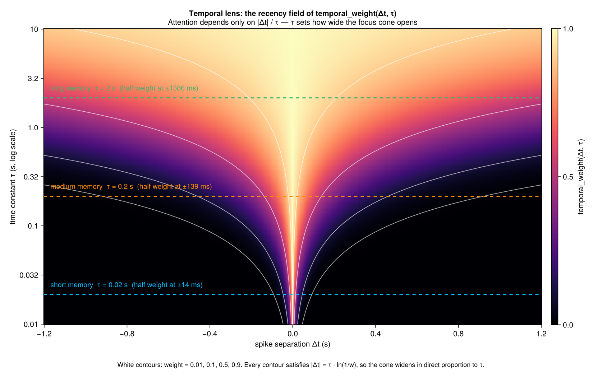
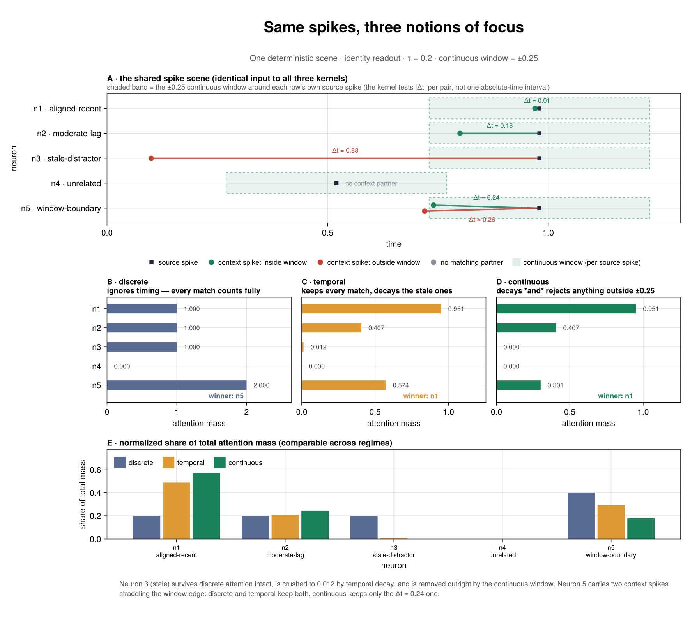
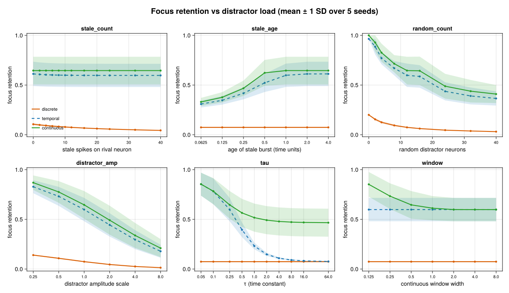
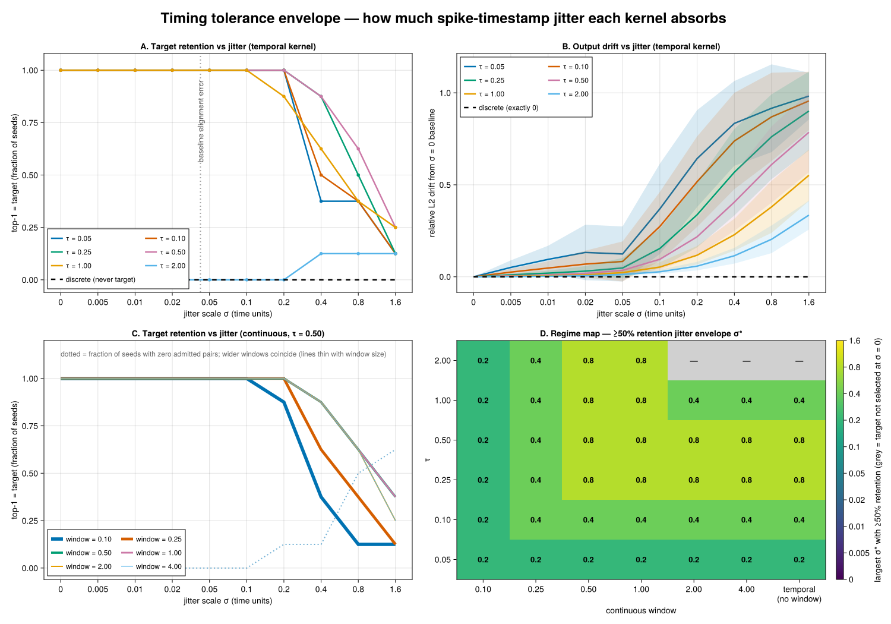
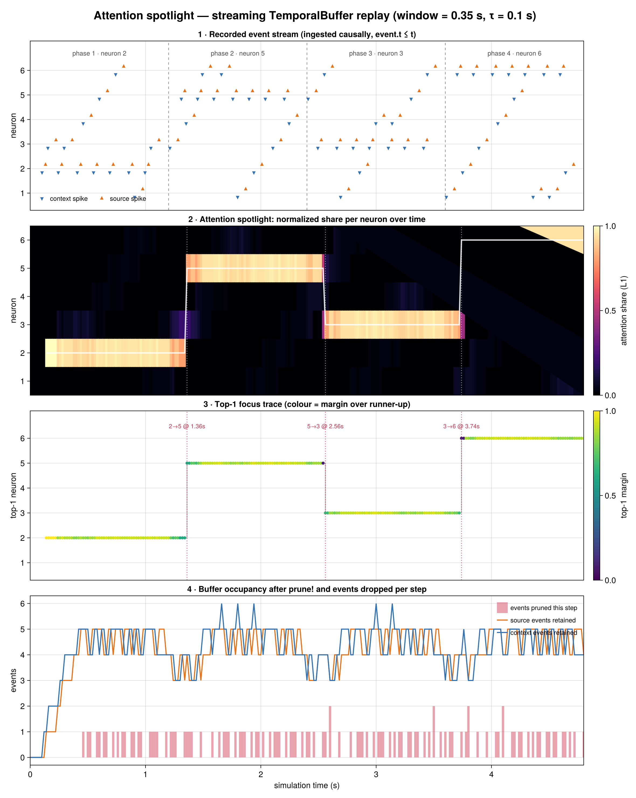
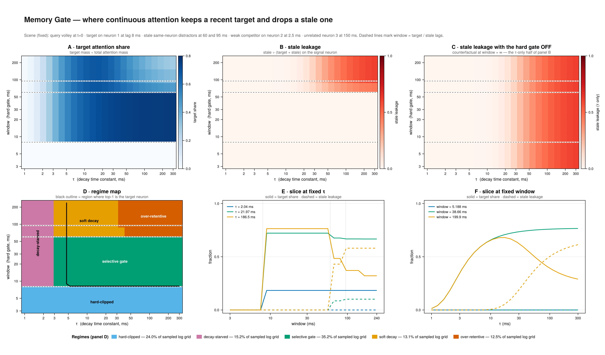

Experiment Gallery
The research harness contains six deterministic, synthetic characterizations of NeuroPulse's coincidence-attention kernels. They were ported with their scenes, sweep grids, decision rules, and contrary findings from rmems/TemporalFocus.jl at c0b51e2f7d473411390dc4a7667fd161326c6492.
These results describe controlled spike scenes. They do not characterize a real Spikenaut trace, prove training improvement, or claim a deployed runtime benefit. Real trace characterization is a later downstream step with its own recorded input digest and adapter boundary.
Reproduce
From the repository root:
julia +1.12.7 --project=experiments -e 'using Pkg; Pkg.develop(path="."); Pkg.instantiate()'
julia +1.12.7 --project=experiments experiments/run_all.jl --out-dir experiments/resultsGive concurrent runs distinct --out-dir roots so they do not overwrite one another's artifacts.
Every entrypoint validates that the canonical TemporalFocus UUID resolves to this NeuroPulse checkout. A run contains config.toml, metrics.csv, figure.png, summary.md, provenance.toml, and snapshots of the exact resolved Project and Manifest.
Download the recorded run
Download the characterization evidence bundle contains all seven completed runs: configurations, numerical metrics, figures, interpretations, source/input hashes, and resolved environment snapshots. The archive includes the additional Temporal Lens and Focus Under Fire figures, and their digests are recorded in each run's provenance. These runs were generated from clean NeuroPulse commit 14e68ac on Julia 1.12.7.
Archive SHA-256: 085d969071f6cd702a614b5bccf6a54261b7155e90e1a24c0523725b2e9ee8c7. The archived environment records the original local checkout path; follow the setup above with Pkg.develop(path=".") to bind the canonical UUID to your checkout when reproducing.
Controlled findings
| Experiment | Controlled question | Observed verdict |
|---|---|---|
| Temporal Lens | How does coincidence weight vary over Δt × τ? | The sampled field is symmetric, follows the exponential ratio law, and agrees bitwise with the Float32 reference over the grid. |
| Three Regimes | What do discrete, temporal, and continuous kernels preserve on the same scene? | Discrete keeps every same-neuron match, temporal decays separated pairs, and continuous also rejects pairs outside its hard window. |
| Focus Under Fire | How does controlled distractor load affect focus? | The pre-registered sweep separates the kernel behaviors; this is robustness on synthetic distractors, not a workload claim. |
| Jitter Test | How much synthetic timestamp jitter can each configuration absorb? | Discrete attention is invariant to timestamp jitter; temporal tolerance varies non-monotonically with τ on the fixed scene. |
| Attention Spotlight | How does focus move as deterministic buffers fill and prune? | The replay produces four stable focus segments and three handoffs while recording the exact generated scenario. |
| Memory Gate | Where does the τ × window plane retain a target and reject stale pairs? | The grid contains clipped, decay-starved, selective, soft-decay, and over-retentive regimes; the best region is a corridor rather than a unique point. |
Rendered outputs
Temporal Lens

Three Regimes

Focus Under Fire

Jitter Test

Attention Spotlight

Memory Gate
